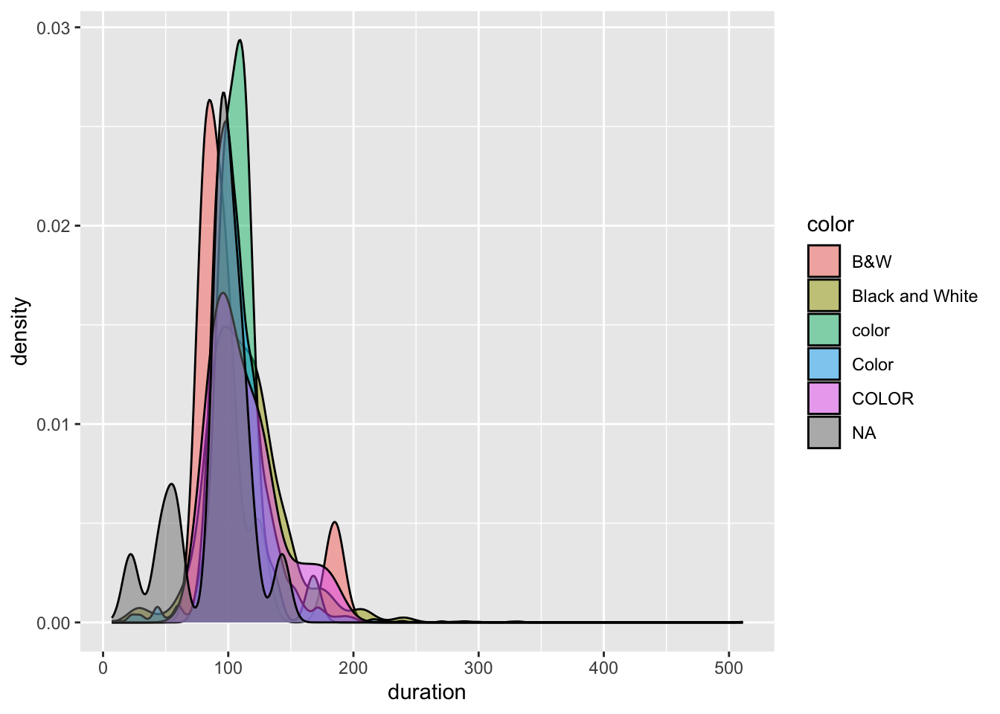
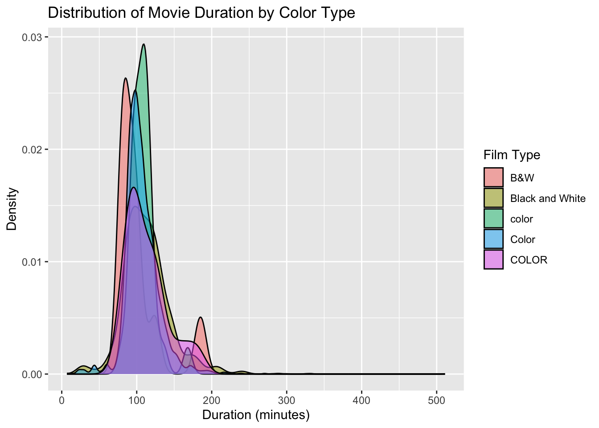
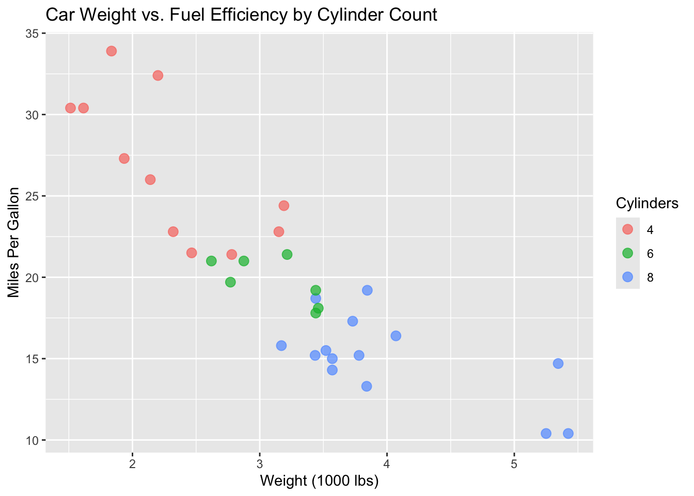

We’ve thus far focused on data preparation and visualization:
What’s coming up?
In the last few weeks we’ll focus on data storytelling through the completion of a course project.
This week we’ll address the other gaps in the workflow: data collection and analysis. We’ll do so in the context of starting a data project…
20.4 14.2 Data Import
20.4.1 Starting Data Project
Any data science project consists of two phases:
Data Collection A data project starts with data! Thus far, you’ve either been given data, or used TidyTuesday data. In this unit:
We WILL explore how to find data, save data, import this data into RStudio, and do some preliminary data cleaning.
We will NOT discuss how to collect data from scratch (e.g. via experiment, observational study, or survey).
Data Analysis Once we have data, we need to do some analysis. In this unit…
We WILL bring together our wrangling & visualization tools to discuss exploratory data analysis (EDA). EDA is the process of getting to know our data, obtaining insights from data, and using these insights to formulate, refine, and explore research questions.
We will NOT explore other types of analysis, such as modeling & prediction–if interested, take STAT 155 and 253 to learn more about these topics.
NOTE: These skills are best learned through practice. We’ll just scratch the surface here.
20.4.2 File Formats
Before exploring how to find, store, import, check, and clean data, it’s important to recognize that data can be stored in various formats. We’ve been working with .csv files. In the background, these have “comma-separated values” (csv):
But there are many other common file types. For example, the following are compatible with R:
Excel files: .xls, .xlsx
R “data serialization” files: .rds
files with tab-separated values: .tsv
20.4.3 STEP 1: Find Data
Check the Datasets page for information about how to find a dataset that fits your needs.
20.4.4 STEP 2: Save Data Locally
Unless we’re just doing a quick, one-off data analysis, it’s important to store a local copy of a data file, i.e. save the data file to our own machine.
Mainly, we shouldn’t rely on another person / institution to store a data file online, in the same place, forever!
20.4.4.1 Recommendations when Saving Data
When saving your data, make sure they are: - in a nice format, eg, a csv file format - where you’ll be able to find it again - ideally, within a folder that’s dedicated to the related project / assignment - alongside the qmd file(s) where you’ll record your analysis of the data
20.4.5 STEP 3: Import Data to RStudio
Once we have a local copy of our data file, we need to get it into RStudio! This process depends on 2 things: (1) the file type (e.g. .csv); and (2) the file location, i.e. where it’s stored on your computer.
20.4.5.1 1. FILE TYPE
The file type indicates which function we’ll need to import it. The table below lists some common import functions and when to use them.
Function
Data file type
read_csv()
.csv - you can save Excel files and Google Sheets as .csv
read_delim()
other delimited formats (tab, space, etc.)
read_sheet()
Google Sheet
st_read()
spatial data shapefile
NOTE: In comparison to read.csv, read_csv is faster when importing large data files and can more easily parse complicated datasets, eg, with dates, times, percentages.
20.4.5.2 2. FILE LOCATION
To import the data, we apply the appropriate function from above to the file path.
A file path is an address to where the file is stored on our computer or the web.
Consider “1600 Grand Ave, St. Paul, MN 55105”. Think about how different parts of the address give increasingly more specific information about the location. “St. Paul, MN 55105” tells us the city and smaller region within the city, “Grand Ave” tells us the street, and “1600” tells us the specific location on the street.
In the example below, the file path is absolute where it tells us the location giving more and more specific information as you read it from left to right.
“~”, on an Apple computer, tells you that you are looking in the user’s home directory.
“Desktop” tells you to go to the Desktop within that home directory.
“112” tells you that you are looking in the 112 folder on the Desktop.
“data” tells you to next go in the data folder in the 112 folder.
“my_data.csv” tells you that you are looking for a file called my_data.csv location within the data folder.
Absolute file paths should only be used when reading files hosted on the web. Otherwise, relative file paths should be used. Relative file paths as the name suggest is relative to the file where the data file is read.
# assume the code containing this script is under a folder called /src which# is at the same level of the /data folderlibrary(tidyverse)my_data <-read_csv("../data/my_data.csv")
20.4.6 STEP 4: Check & Clean Data
Once the data is loaded, ask yourself a few questions:
What’s the structure of the data?
Use str() to learn about the numbers of variables and observations as well as the classes or types of variables (date, location, string, factor, number, boolean, etc.)
Use head() to view the top of the data table
Use View() to view the data in a spreadsheet-like viewer, use this command in the Console but don’t include it in your qmd files since it will prevent your project from rendering.
Is there anything goofy that we need to clean before we can analyze the data?
Is it in a tidy format?
How many rows are there? What does the row mean? What is an observation?
Is there consistent formatting for categorical variables?
Is there missing data that needs to be addressed?
20.4.7 STEP 5: Understand Data
Start by understanding the data that is available to you. If you have a codebook, you have struck gold! If not (the more common case), you’ll need to do some detective work that often involves talking to people.
At this stage, ask yourself: - Where does my data come from? How was it collected? - Is there a codebook? If not, how can I learn more about it? - Are there people I can reach out to who have experience with this data?
20.5 14.3 Exercises
Suppose our goal is to work with data on movie reviews, and that we’ve already gone through the work to find a dataset. The imdb_5000_messy.csv file is posted on Moodle. Let’s work with it!
20.5.1 Exercise 1: Save Data Locally
20.5.1.1 Part a
On your laptop: - Download the “imdb_5000_messy.csv” file from Moodle - Move it to the data folder in your portfolio repository
20.5.1.2 Part b
Hot tip: After saving your data file, it’s important to record appropriate citations and info in either a new qmd (eg: “imdb_5000_messy_README.qmd”) or in the qmd where you’ll analyze the data. These citations should include:
the data source, i.e. where you found the data
the data creator, i.e. who / what group collected the original data
possibly a data codebook, i.e. descriptions of the data variables
After visiting that website, take some quick notes here on the data source and creator:
The data comes from Kaggle, a platform for data science competitions and datasets. The dataset was created by TMDB (The Movie Database), which is a community-built movie and TV database. The dataset contains information about 5,000 movies from IMDB, including details about cast, directors, ratings, revenue, and Facebook likes for various individuals involved in the films.
20.5.2 Exercise 2: Import Data to RStudio
Now that we have a local copy of our data file, let’s get it into RStudio! Remember that this process depends on 2 things: the file type and location. Since our file type is a csv, we can import it using read_csv(). But we have to supply the file location through a file path. To this end, we can either use an absolute file path or a relative file path.
20.5.2.1 Part a
An absolute file path describes the location of a file starting from the root or home directory. How we refer to the user root directory depends upon your machine:
On a Mac: ~
On Windows: typically C:
Then the complete file path to the IMDB data file in the data folder, depending on your machine an where you created your portfolio project, can be:
On a Mac: ~/Desktop/portfolio/data/imdb_5000_messy.csv
On Windows: C:_5000_messy.csv or C:\Desktop\portfolio\data\imdb_5000_messy.csv
Putting this together, use read_csv() with the appropriate absolute file path to import your data into RStudio. Save this as imdb_messy.
library(tidyverse)
── Attaching core tidyverse packages ──────────────────────── tidyverse 2.0.0 ──
✔ dplyr 1.1.4 ✔ readr 2.1.5
✔ forcats 1.0.0 ✔ stringr 1.5.1
✔ ggplot2 3.5.1 ✔ tibble 3.2.1
✔ lubridate 1.9.4 ✔ tidyr 1.3.1
✔ purrr 1.0.4
── Conflicts ────────────────────────────────────────── tidyverse_conflicts() ──
✖ dplyr::filter() masks stats::filter()
✖ dplyr::lag() masks stats::lag()
ℹ Use the conflicted package (<http://conflicted.r-lib.org/>) to force all conflicts to become errors
# Using a placeholder path - you will need to use your actual path# imdb_messy <- read_csv("~/Desktop/portfolio/data/imdb_5000_messy.csv")# For this activity, let's load from an online source so the code runs for everyoneimdb_messy <-read_csv("https://mac-stat.github.io/data/imdb_5000_messy.csv")
New names:
Rows: 5043 Columns: 29
── Column specification
──────────────────────────────────────────────────────── Delimiter: "," chr
(12): color, director_name, actor_2_name, genres, actor_1_name, movie_ti... dbl
(17): ...1, num_critic_for_reviews, duration, director_facebook_likes, a...
ℹ Use `spec()` to retrieve the full column specification for this data. ℹ
Specify the column types or set `show_col_types = FALSE` to quiet this message.
• `` -> `...1`
# Look at the first few rowshead(imdb_messy, 3)
# A tibble: 3 × 29
...1 color director_name num_critic_for_reviews duration
<dbl> <chr> <chr> <dbl> <dbl>
1 1 Color James Cameron 723 178
2 2 Color Gore Verbinski 302 169
3 3 Color Sam Mendes 602 148
# ℹ 24 more variables: director_facebook_likes <dbl>,
# actor_3_facebook_likes <dbl>, actor_2_name <chr>,
# actor_1_facebook_likes <dbl>, gross <dbl>, genres <chr>,
# actor_1_name <chr>, movie_title <chr>, num_voted_users <dbl>,
# cast_total_facebook_likes <dbl>, actor_3_name <chr>,
# facenumber_in_poster <dbl>, plot_keywords <chr>, movie_imdb_link <chr>,
# num_user_for_reviews <dbl>, language <chr>, country <chr>, …
20.5.2.2 Part b
Absolute file paths can get really long, depending upon our number of sub-folders, and they should not be used when sharing code with other and instead relative file paths should be used. A relative file path describes the location of a file from the current “working directory”, i.e. where RStudio would currently look for on your computer. Check what your working directory is inside this qmd:
# This should be the folder where you stored this qmd!getwd()
Next, check what the working directory is for the console by typing getwd() in the console. This is probably different, meaning that the relative file paths that will work in your qmd won’t work in the console! You can either exclusively work inside your qmd, or change the working directory in your console, by navigating to the following in the upper toolbar: Session > Set Working Directory > To Source File location.
20.5.2.3 Part c
As a good practice, we created a data folder and saved our data file (imdb_5000_messy.csv) into.
Since our .qmd analysis and .csv data live in the same project, we don’t have to write out absolute file paths that go all the way to the root directory. We can use relative file paths that start from where our code file exists to where the data file exist:
On a Mac: ../data/imdb_5000_messy.csv
On Windows: .._5000_messy.csv or ..\data\imdb_5000_messy.csv
NOTE: .. means go up one level in the file hierarchy, ie, go to the parent folder/directory.
Putting this together, use read_csv() with the appropriate relative file path to import your data into RStudio. Save this as imdb_temp (temp for “temporary”). Convince yourself that this worked, i.e. you get the same dataset as imdb_messy.
# Using a relative path# imdb_temp <- read_csv("../data/imdb_5000_messy.csv")# For this activity, we'll just reuse the data loaded aboveimdb_temp <- imdb_messy# Check they're the same by comparing dimensionsdim(imdb_messy) ==dim(imdb_temp)
[1] TRUE TRUE
20.5.2.4 File Paths
Absolute file paths should be used when referring to files hosed on the web, eg, https://mac-stat.github.io/data/kiva_partners2.csv. In all other instances, relative file paths should be used.
20.5.2.5 Part d: OPTIONAL
Sometimes, we don’t want to import the entire dataset. For example, we might want to… - skips some rows, eg, if they’re just “filler” - only import the first “n” rows, eg, if the dataset is really large - only import a random subset of “n” rows, eg, if the dataset is really large
The “data import cheat sheet” at the top of this qmd, or Google, are handy resources here. As one example…
# Try importing only the first 5 rowssample_data <-read_csv("https://mac-stat.github.io/data/imdb_5000_messy.csv", n_max =5)
New names:
Rows: 5 Columns: 29
── Column specification
──────────────────────────────────────────────────────── Delimiter: "," chr
(12): color, director_name, actor_2_name, genres, actor_1_name, movie_ti... dbl
(17): ...1, num_critic_for_reviews, duration, director_facebook_likes, a...
ℹ Use `spec()` to retrieve the full column specification for this data. ℹ
Specify the column types or set `show_col_types = FALSE` to quiet this message.
• `` -> `...1`
nrow(sample_data)
[1] 5
20.5.3 Exercise 3: Check Data
After importing new data into RStudio, you MUST do some quick checks of the data. Here are two first steps that are especially useful.
20.5.3.1 Part a
Open imdb_messy in the spreadsheet-like viewer by typing View(imdb_messy) in the console. Sort this “spreadsheet” by different variables by clicking on the arrows next to the variable names. Do you notice anything unexpected?
When sorting and examining the data in View, I noticed several issues:- The color variable has inconsistent values (B&W, Black and White, color, Color, COLOR)- There are many missing values (NA) across different columns- Some values seem unrealistic or like data entry errors (e.g., extremely high budget numbers)
20.5.3.2 Part b
Do a quick summary() of each variable in the dataset. One way to do this is below:
imdb_messy |>mutate(across(where(is.character), as.factor)) |># convert characters to factors in order to summarizesummary()
...1 color director_name
Min. : 1 B&W : 10 Steven Spielberg: 26
1st Qu.:1262 Black and White: 199 Woody Allen : 22
Median :2522 color : 30 Clint Eastwood : 20
Mean :2522 Color :4755 Martin Scorsese : 20
3rd Qu.:3782 COLOR : 30 Ridley Scott : 17
Max. :5043 NA's : 19 (Other) :4834
NA's : 104
num_critic_for_reviews duration director_facebook_likes
Min. : 1.0 Min. : 7.0 Min. : 0.0
1st Qu.: 50.0 1st Qu.: 93.0 1st Qu.: 7.0
Median :110.0 Median :103.0 Median : 49.0
Mean :140.2 Mean :107.2 Mean : 686.5
3rd Qu.:195.0 3rd Qu.:118.0 3rd Qu.: 194.5
Max. :813.0 Max. :511.0 Max. :23000.0
NA's :50 NA's :15 NA's :104
actor_3_facebook_likes actor_2_name actor_1_facebook_likes
Min. : 0.0 Morgan Freeman : 20 Min. : 0
1st Qu.: 133.0 Charlize Theron: 15 1st Qu.: 614
Median : 371.5 Brad Pitt : 14 Median : 988
Mean : 645.0 James Franco : 11 Mean : 6560
3rd Qu.: 636.0 Meryl Streep : 11 3rd Qu.: 11000
Max. :23000.0 (Other) :4959 Max. :640000
NA's :23 NA's : 13 NA's :7
gross genres actor_1_name
Min. : 162 Drama : 236 Robert De Niro: 49
1st Qu.: 5340988 Comedy : 209 Johnny Depp : 41
Median : 25517500 Comedy|Drama : 191 Nicolas Cage : 33
Mean : 48468408 Comedy|Drama|Romance: 187 J.K. Simmons : 31
3rd Qu.: 62309438 Comedy|Romance : 158 Bruce Willis : 30
Max. :760505847 Drama|Romance : 152 (Other) :4852
NA's :884 (Other) :3910 NA's : 7
movie_title num_voted_users cast_total_facebook_likes
Ben-Hur : 3 Min. : 5 Min. : 0
Halloween : 3 1st Qu.: 8594 1st Qu.: 1411
Home : 3 Median : 34359 Median : 3090
King Kong : 3 Mean : 83668 Mean : 9699
Pan : 3 3rd Qu.: 96309 3rd Qu.: 13756
The Fast and the Furious : 3 Max. :1689764 Max. :656730
(Other) :5025
actor_3_name facenumber_in_poster
Ben Mendelsohn: 8 Min. : 0.000
John Heard : 8 1st Qu.: 0.000
Steve Coogan : 8 Median : 1.000
Anne Hathaway : 7 Mean : 1.371
Jon Gries : 7 3rd Qu.: 2.000
(Other) :4982 Max. :43.000
NA's : 23 NA's :13
plot_keywords
based on novel : 4
1940s|child hero|fantasy world|orphan|reference to peter pan : 3
alien friendship|alien invasion|australia|flying car|mother daughter relationship: 3
animal name in title|ape abducts a woman|gorilla|island|king kong : 3
assistant|experiment|frankenstein|medical student|scientist : 3
(Other) :4874
NA's : 153
movie_imdb_link
http://www.imdb.com/title/tt0077651/?ref_=fn_tt_tt_1: 3
http://www.imdb.com/title/tt0232500/?ref_=fn_tt_tt_1: 3
http://www.imdb.com/title/tt0360717/?ref_=fn_tt_tt_1: 3
http://www.imdb.com/title/tt1976009/?ref_=fn_tt_tt_1: 3
http://www.imdb.com/title/tt2224026/?ref_=fn_tt_tt_1: 3
http://www.imdb.com/title/tt2638144/?ref_=fn_tt_tt_1: 3
(Other) :5025
num_user_for_reviews language country content_rating
Min. : 1.0 English :4704 USA :3807 R :2118
1st Qu.: 65.0 French : 73 UK : 448 PG-13 :1461
Median : 156.0 Spanish : 40 France : 154 PG : 701
Mean : 272.8 Hindi : 28 Canada : 126 Not Rated: 116
3rd Qu.: 326.0 Mandarin: 26 Germany: 97 G : 112
Max. :5060.0 (Other) : 160 (Other): 406 (Other) : 232
NA's :21 NA's : 12 NA's : 5 NA's : 303
budget title_year actor_2_facebook_likes imdb_score
Min. :2.180e+02 Min. :1916 Min. : 0 Min. :1.600
1st Qu.:6.000e+06 1st Qu.:1999 1st Qu.: 281 1st Qu.:5.800
Median :2.000e+07 Median :2005 Median : 595 Median :6.600
Mean :3.975e+07 Mean :2002 Mean : 1652 Mean :6.442
3rd Qu.:4.500e+07 3rd Qu.:2011 3rd Qu.: 918 3rd Qu.:7.200
Max. :1.222e+10 Max. :2016 Max. :137000 Max. :9.500
NA's :492 NA's :108 NA's :13
aspect_ratio movie_facebook_likes
Min. : 1.18 Min. : 0
1st Qu.: 1.85 1st Qu.: 0
Median : 2.35 Median : 166
Mean : 2.22 Mean : 7526
3rd Qu.: 2.35 3rd Qu.: 3000
Max. :16.00 Max. :349000
NA's :329
Follow-up: - What type of info is provided on quantitative variables? For quantitative variables, the summary provides the minimum, 1st quartile, median, mean, 3rd quartile, and maximum values, along with the count of NA values.
What type of info is provided on categorical variables? For categorical variables (factors), the summary shows the frequency counts for each category and the number of NA values.
What stands out to you in these summaries? Is there anything you’d need to clean before using this data? Several issues stand out:1. The color variable has inconsistent categories2. There are many NA values in multiple columns (e.g., gross, budget, plot_keywords)3. Some variables have very skewed distributions (e.g., Facebook likes)4. There are some unusual values (like the maximum budget of 1.22e+10)
20.5.4 Exercise 4: Clean Data: Factor Variables 1
If you didn’t already in Exercise 3, check out the color variable in the imdb_messy dataset.
# Let's see all the unique values in the color variableimdb_messy |>count(color)
# A tibble: 6 × 2
color n
<chr> <int>
1 B&W 10
2 Black and White 199
3 COLOR 30
4 Color 4755
5 color 30
6 <NA> 19
What’s goofy about this / what do we need to fix? The color variable has inconsistent values that essentially represent the same categories:- “B&W” and “Black and White” both represent black and white films- “COLOR”, “Color”, and “color” all represent color films- There are also 19 NA values
More specifically, what different categories does the color variable take, and how many movies fall into each of these categories? As shown in the count above:- B&W: 10 movies- Black and White: 199 movies- COLOR: 30 movies- Color: 4755 movies- color: 30 movies- NA: 19 movies
20.5.5 Exercise 5: Clean Data: Factor Variables 2
When working with categorical variables like color, the categories must be “clean”, i.e. consistent and in the correct format. Let’s make that happen.
20.5.5.1 Part a
We could open the .csv file in, say, Excel or Google sheets, clean up the color variable, save a clean copy, and then reimport that into RStudio. BUT that would be the wrong thing to do. Why is it important to use R code, which we then save inside this qmd, to clean our data?
It’s important to use R code to clean data for several reasons:1. Reproducibility - The entire data cleaning process is documented and can be rerun2. Transparency - Others can see exactly what changes were made3. Consistency - The same process will be applied every time4. Efficiency - If the raw data changes, we can easily rerun our cleaning code5. Version control - Changes to our cleaning process can be tracked
20.5.5.2 Part b
Let’s use R code to change the color variable so that it appropriately combines the various categories into only 2: Color and Black_White. We’ve learned a couple sets of string-related tools that could be handy here. First, starting with the imdb_messy data, change the color variable using one of the functions we learned in the Factors lesson.
# Using fct_recode to recode the color variableimdb_temp <- imdb_messy |>mutate(color =fct_recode(color,"Color"="COLOR","Color"="color","Black_White"="B&W","Black_White"="Black and White"))# Check the resultimdb_temp |>count(color)
# A tibble: 3 × 2
color n
<fct> <int>
1 Black_White 209
2 Color 4815
3 <NA> 19
20.5.5.3 Part c
Repeat Part b using one of our string functions from the String lesson:
# Using str_replace to clean the color variableimdb_temp2 <- imdb_messy |>mutate(color =str_replace(color, "COLOR", "Color"),color =str_replace(color, "color", "Color"),color =str_replace(color, "B&W", "Black_White"),color =str_replace(color, "Black and White", "Black_White"))# Check the resultimdb_temp2 |>count(color)
# A tibble: 3 × 2
color n
<chr> <int>
1 Black_White 209
2 Color 4815
3 <NA> 19
20.5.6 Exercise 6: Clean Data: Missing Data 1
Throughout these exercises, you’ve probably noticed that there’s a bunch of missing data. This is encoded as NA (not available) in R. There are a few questions to address about missing data:
How many values are missing data? What’s the volume of the missingness?
Why are some values missing?
What should we do about the missing values?
Let’s consider the first 2 questions in this exercise.
20.5.6.1 Part a
As a first step, let’s simply understand the volume of NAs. Specifically:
# Count the total number of rows in imdb_messynrow(imdb_messy)
[1] 5043
# Then count the number of NAs in each columncolSums(is.na(imdb_messy))
# Then count the number of NAs in a specific columnimdb_messy |>summarize(na_count =sum(is.na(actor_1_facebook_likes)))
# A tibble: 1 × 1
na_count
<int>
1 7
20.5.6.2 Part b
As a second step, let’s think about why some values are missing. Study the individual observations with NAs carefully. Why do you think they are missing? Are certain films more likely to have more NAs than others?
After examining the data, it appears that:1. Older films tend to have more missing values, especially for Facebook-related data2. Some films may be missing budget or gross data because this information wasn’t publicly available3. Some missing values (like in the actor columns) might be from documentaries or films without traditional actors4. Some films might be missing content ratings if they weren’t officially rated
20.5.6.3 Part c
Consider a more specific example. Obtain a dataset of movies that are missing data on actor_1_facebook_likes. Then explain why you think there are NAs.
# Get films with missing actor_1_facebook_likesfilms_missing_actor_likes <- imdb_messy |>filter(is.na(actor_1_facebook_likes))# Examine these filmsfilms_missing_actor_likes
# A tibble: 7 × 29
...1 color director_name num_critic_for_reviews duration
<dbl> <chr> <chr> <dbl> <dbl>
1 4503 Color Léa Pool 23 97
2 4520 Color Harry Gantz 12 105
3 4721 Color U. Roberto Romano 3 80
4 4838 Color Pan Nalin 15 102
5 4946 Color Amal Al-Agroobi NA 62
6 4947 Color Andrew Berends 12 90
7 4991 Color Jem Cohen 12 111
# ℹ 24 more variables: director_facebook_likes <dbl>,
# actor_3_facebook_likes <dbl>, actor_2_name <chr>,
# actor_1_facebook_likes <dbl>, gross <dbl>, genres <chr>,
# actor_1_name <chr>, movie_title <chr>, num_voted_users <dbl>,
# cast_total_facebook_likes <dbl>, actor_3_name <chr>,
# facenumber_in_poster <dbl>, plot_keywords <chr>, movie_imdb_link <chr>,
# num_user_for_reviews <dbl>, language <chr>, country <chr>, …
Looking at these films, it appears they are documentaries or similar non-fiction films that don’t have traditional actors. Since there are no lead actors, there wouldn’t be Facebook likes data for “actor_1”. In these cases, NA makes sense because the field simply doesn’t apply to these films rather than indicating missing information about an actor.
20.5.7 Exercise 7: Clean Data: Missing Data 2
Next, let’s think about what to do about the missing values. There is no perfect or universal approach here. Rather, we must think carefully about…
Why the values are missing?
What we want to do with our data?
What is the impact of removing or replacing missing data on our work / conclusions?
20.5.7.1 Part a
Calculate the average duration of a film. THINK: How can we deal with the NA’s?
# Calculate average duration, ignoring NA valuesimdb_messy |>summarize(avg_duration =mean(duration, na.rm =TRUE))
# A tibble: 1 × 1
avg_duration
<dbl>
1 107.
Follow-up: - How are the NAs dealt with here? Did we have to create and save a new dataset in order to do this analysis?
The NAs are handled using the na.rm = TRUE parameter in the mean() function, which tells R to ignore NA values when calculating the mean. We did not need to create a new dataset for this analysis - we simply addressed the NAs within the calculation itself. This approach is convenient for one-off calculations but doesn’t permanently affect the dataset.
20.5.7.2 Part b
Try out the drop_na() function:
# Remove all rows with any NA valuesimdb_complete <-drop_na(imdb_messy)# Check how many rows remainnrow(imdb_complete)
[1] 3756
Follow-up questions: - What did drop_na() do? How many data points are left? The drop_na() function removed all rows that contained at least one NA value in any column. We started with 5,043 rows and ended with only 3,756 rows - meaning we lost 1,287 rows (about 25.5% of our data).
In what situations might this function be a good idea? This function might be a good idea when:- You need complete cases for certain statistical methods that can’t handle NAs- The amount of missing data is small, so you don’t lose much information- The missing data is missing completely at random (MCAR) so removing rows won’t introduce bias- You need a quick, clean dataset for a simple analysis or visualization
In what situations might this function be a bad idea? This function might be a bad idea when:- You lose too much data (as in this case - losing 25% is substantial)- The missing data follows a pattern, so removing rows could introduce bias- The NAs actually represent meaningful information (like in our actor_1_facebook_likes example)- You only need a few variables for your analysis, but you’re removing rows based on NAs in variables you don’t need
20.5.7.3 Part c
drop_na() removes data points that have any NA values, even if we don’t care about the variable(s) for which data is missing. This can result in losing a lot of data points that do have data on the variables we actually care about! For example, suppose we only want to explore the relationship between film duration and whether it’s in color. Check out a plot:
# Try to plot with the full datasetggplot(imdb_messy, aes(x = duration, fill = color)) +geom_density(alpha =0.5)
Warning: Removed 15 rows containing non-finite outside the scale range
(`stat_density()`).

Follow-up: - Create a new dataset with only and all movies that have complete info on duration and color. HINT: You could use !i s.na(___) or drop_na() (differently than above)
# Create dataset with only movies that have complete info on duration and colorimdb_duration_color <- imdb_messy |>filter(!is.na(duration), !is.na(color))# Check how many rows remainnrow(imdb_duration_color)
[1] 5010
Use this new dataset to create a new and improved plot.
# Create improved plotggplot(imdb_duration_color, aes(x = duration, fill = color)) +geom_density(alpha =0.5) +labs(title ="Distribution of Movie Duration by Color Type",x ="Duration (minutes)",y ="Density",fill ="Film Type")

How many movies remain in your new dataset? Hence why this is better than using the dataset from part b?
We have 5,010 movies in our new dataset, compared to just 3,756 in the completely clean dataset. This is much better because we’re only removing movies that are missing the specific variables we need for our analysis (duration and color). We’ve kept 1,254 more movies that would have been unnecessarily removed if we had used drop_na() on the entire dataset.
20.5.7.4 Part d
In some cases, missing data is more non-data than unknown data. For example, the films with NAs for actor_1_facebook_likes actually have 0 Facebook likes–they don’t even have actors! In these cases, we can replace the NAs with a 0. Use the replace_na() function to create a new dataset (imdb_temp) that replaces the NAs in actor_1_facebook_likes with 0.
# Replace NAs in actor_1_facebook_likes with 0imdb_temp <- imdb_messy |>mutate(actor_1_facebook_likes =replace_na(actor_1_facebook_likes, 0))# Check if there are any NAs left in that columnimdb_temp |>summarize(na_count =sum(is.na(actor_1_facebook_likes)))
# A tibble: 1 × 1
na_count
<int>
1 0
20.5.8 Exercise 8: New Data + Projects
Let’s practice the above ideas while also planting some seeds for the course project. Each group will pick and analyze their own dataset. The people you’re sitting with today aren’t necessarily your project groups! BUT do some brainstorming together:
Share with each other: What are some personal hobbies or passions or things you’ve been thinking about or things you’d like to learn more about? Don’t think too hard about this! Just share what’s at the top of mind today.
Each individual: Find a dataset online that’s related to one of the topics you shared in the above prompt.
Discuss what data you found with your group!
Load the data into RStudio, perform some basic checks, and perform some preliminary cleaning, as necessary.
For this exercise, I found a dataset about global coffee production. Let me demonstrate how I would approach exploring this dataset:
# Load a sample dataset - using mtcars which is built into R# In a real scenario, you would load your own datasetdata(mtcars)# Basic checkshead(mtcars)
# Check for missing values - mtcars doesn't have NAs, but this is how you'd checkcolSums(is.na(mtcars))
mpg cyl disp hp drat wt qsec vs am gear carb
0 0 0 0 0 0 0 0 0 0 0
# Basic cleaning demonstration - convert categorical variables to factorsmtcars_clean <- mtcars |>mutate(cyl =as.factor(cyl),vs =as.factor(vs),am =as.factor(am),gear =as.factor(gear),carb =as.factor(carb) )# Create quick visualization to explore the dataggplot(mtcars_clean, aes(x = wt, y = mpg, color = cyl)) +geom_point(size =3, alpha =0.7) +labs(title ="Car Weight vs. Fuel Efficiency by Cylinder Count",x ="Weight (1000 lbs)",y ="Miles Per Gallon",color ="Cylinders")

This example shows the basic workflow: loading data, checking its structure, identifying missing values, cleaning as needed, and creating exploratory visualizations.
Source Code
---title: "Data Import"format: html---## Learning GoalsGet a glimpse into how to...- find existing data sets- save data sets locally- load data into RStudio- do some preliminary data checking and cleaning steps before further wrangling / visualization: - make sure variables are properly formatted - deal with missing valuesNOTE: These skills are best learned through practice.We'll just scratch the surface here.## Additional ResourcesFor more information about the topics covered in this chapter, refer to the resources below:- [Using the import wizard (YouTube)](https://www.youtube.com/watch?v=EWz9siRXLdM) by Lisa Lendway- [data import cheat sheet (pdf)](https://posit.co/wp-content/uploads/2022/10/data-import-cheatsheet.pdf)- [readr documentation (html)](https://readr.tidyverse.org/)- [Data import (html)](https://r4ds.had.co.nz/data-import.html) by Wickham and Grolemund- [Missing data (html)](https://r4ds.had.co.nz/tidy-data.html#missing-values-3) by Wickham and Grolemund- [Data intake (html)](https://mdsr-book.github.io/mdsr2e/ch-dataI.html) by Baumer, Kaplan, and Horton## 14.1 ReviewWHERE ARE WE?We've thus far focused on data preparation and visualization:What's coming up?In the last few weeks we'll focus on data storytelling through the completion of a course project.This week we'll address the other gaps in the workflow: data collection and analysis.We'll do so in the context of starting a data project...## 14.2 Data Import### Starting Data ProjectAny data science project consists of two phases:1. **Data Collection** A data project starts with data! Thus far, you've either been given data, or used TidyTuesday data. In this unit: - We WILL explore how to find data, save data, import this data into RStudio, and do some preliminary data cleaning. - We will NOT discuss how to collect data from scratch (e.g. via experiment, observational study, or survey).2. **Data Analysis** Once we have data, we need to do some analysis. In this unit... - We WILL bring together our wrangling & visualization tools to discuss exploratory data analysis (EDA). EDA is the process of getting to know our data, obtaining insights from data, and using these insights to formulate, refine, and explore research questions. - We will NOT explore other types of analysis, such as modeling & prediction–if interested, take STAT 155 and 253 to learn more about these topics.NOTE: These skills are best learned through practice.We'll just scratch the surface here.### File FormatsBefore exploring how to find, store, import, check, and clean data, it's important to recognize that data can be stored in various formats.We've been working with .csv files.In the background, these have "comma-separated values" (csv):But there are many other common file types.For example, the following are compatible with R:- Excel files: .xls, .xlsx- R "data serialization" files: .rds- files with tab-separated values: .tsv### STEP 1: Find DataCheck the Datasets page for information about how to find a dataset that fits your needs.### STEP 2: Save Data LocallyUnless we're just doing a quick, one-off data analysis, it's important to store a local copy of a data file, i.e. save the data file to our own machine.Mainly, we shouldn't rely on another person / institution to store a data file online, in the same place, forever!#### Recommendations when Saving DataWhen saving your data, make sure they are: - in a nice format, eg, a csv file format - where you'll be able to find it again - ideally, within a folder that's dedicated to the related project / assignment - alongside the qmd file(s) where you'll record your analysis of the data### STEP 3: Import Data to RStudioOnce we have a local copy of our data file, we need to get it into RStudio!This process depends on 2 things: (1) the file type (e.g. .csv); and (2) the file location, i.e. where it's stored on your computer.#### 1. FILE TYPEThe file type indicates which function we'll need to import it.The table below lists some common import functions and when to use them.| Function | Data file type ||--------------|-----------------------------------------------------------|| read_csv() | .csv - you can save Excel files and Google Sheets as .csv || read_delim() | other delimited formats (tab, space, etc.) || read_sheet() | Google Sheet || st_read() | spatial data shapefile |NOTE: In comparison to read.csv, read_csv is faster when importing large data files and can more easily parse complicated datasets, eg, with dates, times, percentages.#### 2. FILE LOCATIONTo import the data, we apply the appropriate function from above to the file path.A file path is an address to where the file is stored on our computer or the web.Consider "1600 Grand Ave, St. Paul, MN 55105".Think about how different parts of the address give increasingly more specific information about the location."St. Paul, MN 55105" tells us the city and smaller region within the city, "Grand Ave" tells us the street, and "1600" tells us the specific location on the street.In the example below, the file path is absolute where it tells us the location giving more and more specific information as you read it from left to right.- "\~", on an Apple computer, tells you that you are looking in the user's home directory.- "Desktop" tells you to go to the Desktop within that home directory.- "112" tells you that you are looking in the 112 folder on the Desktop.- "data" tells you to next go in the data folder in the 112 folder.- "my_data.csv" tells you that you are looking for a file called my_data.csv location within the data folder.``` rlibrary(tidyverse)my_data <-read_csv("~/Desktop/112/data/my_data.csv")```Absolute file paths should only be used when reading files hosted on the web.Otherwise, relative file paths should be used.Relative file paths as the name suggest is relative to the file where the data file is read.``` r# assume the code containing this script is under a folder called /src which# is at the same level of the /data folderlibrary(tidyverse)my_data <-read_csv("../data/my_data.csv")```### STEP 4: Check & Clean DataOnce the data is loaded, ask yourself a few questions:1. What's the structure of the data? - Use str() to learn about the numbers of variables and observations as well as the classes or types of variables (date, location, string, factor, number, boolean, etc.) - Use head() to view the top of the data table - Use View() to view the data in a spreadsheet-like viewer, use this command in the Console but don't include it in your qmd files since it will prevent your project from rendering.2. Is there anything goofy that we need to clean before we can analyze the data? - Is it in a tidy format? - How many rows are there? What does the row mean? What is an observation? - Is there consistent formatting for categorical variables? - Is there missing data that needs to be addressed?### STEP 5: Understand DataStart by understanding the data that is available to you.If you have a codebook, you have struck gold!If not (the more common case), you'll need to do some detective work that often involves talking to people.At this stage, ask yourself: - Where does my data come from?How was it collected?- Is there a codebook?If not, how can I learn more about it?- Are there people I can reach out to who have experience with this data?## 14.3 ExercisesSuppose our goal is to work with data on movie reviews, and that we've already gone through the work to find a dataset.The imdb_5000_messy.csv file is posted on Moodle.Let's work with it!### Exercise 1: Save Data Locally#### Part aOn your laptop: - Download the "imdb_5000_messy.csv" file from Moodle - Move it to the data folder in your portfolio repository#### Part bHot tip: After saving your data file, it's important to record appropriate citations and info in either a new qmd (eg: "imdb_5000_messy_README.qmd") or in the qmd where you'll analyze the data.These citations should include:- the data source, i.e. where you found the data- the data creator, i.e. who / what group collected the original data- possibly a data codebook, i.e. descriptions of the data variablesTo this end, check out where we originally got our IMDB data: <https://www.kaggle.com/datasets/tmdb/tmdb-movie-metadata>After visiting that website, take some quick notes here on the data source and creator:*The data comes from Kaggle, a platform for data science competitions and datasets. The dataset was created by TMDB (The Movie Database), which is a community-built movie and TV database. The dataset contains information about 5,000 movies from IMDB, including details about cast, directors, ratings, revenue, and Facebook likes for various individuals involved in the films.*### Exercise 2: Import Data to RStudioNow that we have a local copy of our data file, let's get it into RStudio!Remember that this process depends on 2 things: the file type and location.Since our file type is a csv, we can import it using read_csv().But we have to supply the file location through a file path.To this end, we can either use an absolute file path or a relative file path.#### Part aAn absolute file path describes the location of a file starting from the root or home directory.How we refer to the user root directory depends upon your machine:- On a Mac: \~- On Windows: typically C:\Then the complete file path to the IMDB data file in the data folder, depending on your machine an where you created your portfolio project, can be:- On a Mac: \~/Desktop/portfolio/data/imdb_5000_messy.csv- On Windows: C:\Desktop\portfolio\data\imdb\_5000_messy.csv or C:\\Desktop\\portfolio\\data\\imdb_5000_messy.csvPutting this together, use read_csv() with the appropriate absolute file path to import your data into RStudio.Save this as imdb_messy.```{r}library(tidyverse)# Using a placeholder path - you will need to use your actual path# imdb_messy <- read_csv("~/Desktop/portfolio/data/imdb_5000_messy.csv")# For this activity, let's load from an online source so the code runs for everyoneimdb_messy <-read_csv("https://mac-stat.github.io/data/imdb_5000_messy.csv")# Look at the first few rowshead(imdb_messy, 3)```#### Part bAbsolute file paths can get really long, depending upon our number of sub-folders, and they should not be used when sharing code with other and instead relative file paths should be used.A relative file path describes the location of a file from the current "working directory", i.e. where RStudio would currently look for on your computer.Check what your working directory is inside this qmd:```{r}# This should be the folder where you stored this qmd!getwd()```Next, check what the working directory is for the console by typing getwd() in the console.This is probably different, meaning that the relative file paths that will work in your qmd won't work in the console!You can either exclusively work inside your qmd, or change the working directory in your console, by navigating to the following in the upper toolbar: Session \> Set Working Directory \> To Source File location.#### Part cAs a good practice, we created a data folder and saved our data file (imdb_5000_messy.csv) into.Since our .qmd analysis and .csv data live in the same project, we don't have to write out absolute file paths that go all the way to the root directory.We can use relative file paths that start from where our code file exists to where the data file exist:- On a Mac: ../data/imdb_5000_messy.csv- On Windows: ..\data\imdb\_5000_messy.csv or ..\\data\\imdb_5000_messy.csvNOTE: ..means go up one level in the file hierarchy, ie, go to the parent folder/directory.Putting this together, use read_csv() with the appropriate relative file path to import your data into RStudio.Save this as imdb_temp (temp for "temporary").Convince yourself that this worked, i.e. you get the same dataset as imdb_messy.```{r}# Using a relative path# imdb_temp <- read_csv("../data/imdb_5000_messy.csv")# For this activity, we'll just reuse the data loaded aboveimdb_temp <- imdb_messy# Check they're the same by comparing dimensionsdim(imdb_messy) ==dim(imdb_temp)```#### File PathsAbsolute file paths should be used when referring to files hosed on the web, eg, https://mac-stat.github.io/data/kiva_partners2.csv.In all other instances, relative file paths should be used.#### Part d: OPTIONALSometimes, we don't want to import the entire dataset.For example, we might want to...- skips some rows, eg, if they're just "filler" - only import the first "n" rows, eg, if the dataset is really large - only import a random subset of "n" rows, eg, if the dataset is really largeThe "data import cheat sheet" at the top of this qmd, or Google, are handy resources here.As one example...```{r}# Try importing only the first 5 rowssample_data <-read_csv("https://mac-stat.github.io/data/imdb_5000_messy.csv", n_max =5)nrow(sample_data)```### Exercise 3: Check DataAfter importing new data into RStudio, you MUST do some quick checks of the data.Here are two first steps that are especially useful.#### Part aOpen imdb_messy in the spreadsheet-like viewer by typing View(imdb_messy) in the console.Sort this "spreadsheet" by different variables by clicking on the arrows next to the variable names.Do you notice anything unexpected?*When sorting and examining the data in View, I noticed several issues:* *- The color variable has inconsistent values (B&W, Black and White, color, Color, COLOR)* *- There are many missing values (NA) across different columns* *- Some values seem unrealistic or like data entry errors (e.g., extremely high budget numbers)*#### Part bDo a quick summary() of each variable in the dataset.One way to do this is below:```{r}imdb_messy |>mutate(across(where(is.character), as.factor)) |># convert characters to factors in order to summarizesummary()```Follow-up: - What type of info is provided on quantitative variables?*For quantitative variables, the summary provides the minimum, 1st quartile, median, mean, 3rd quartile, and maximum values, along with the count of NA values.*- What type of info is provided on categorical variables? *For categorical variables (factors), the summary shows the frequency counts for each category and the number of NA values.*- What stands out to you in these summaries? Is there anything you'd need to clean before using this data? *Several issues stand out:* *1. The color variable has inconsistent categories* *2. There are many NA values in multiple columns (e.g., gross, budget, plot_keywords)* *3. Some variables have very skewed distributions (e.g., Facebook likes)* *4. There are some unusual values (like the maximum budget of 1.22e+10)*### Exercise 4: Clean Data: Factor Variables 1If you didn't already in Exercise 3, check out the color variable in the imdb_messy dataset.```{r}# Let's see all the unique values in the color variableimdb_messy |>count(color)```What's goofy about this / what do we need to fix?*The color variable has inconsistent values that essentially represent the same categories:* *- "B&W" and "Black and White" both represent black and white films* *- "COLOR", "Color", and "color" all represent color films* *- There are also 19 NA values*More specifically, what different categories does the color variable take, and how many movies fall into each of these categories?*As shown in the count above:* *- B&W: 10 movies* *- Black and White: 199 movies* *- COLOR: 30 movies* *- Color: 4755 movies* *- color: 30 movies* *- NA: 19 movies*### Exercise 5: Clean Data: Factor Variables 2When working with categorical variables like color, the categories must be "clean", i.e. consistent and in the correct format.Let's make that happen.#### Part aWe could open the .csv file in, say, Excel or Google sheets, clean up the color variable, save a clean copy, and then reimport that into RStudio.BUT that would be the wrong thing to do.Why is it important to use R code, which we then save inside this qmd, to clean our data?*It's important to use R code to clean data for several reasons:* *1. Reproducibility - The entire data cleaning process is documented and can be rerun* *2. Transparency - Others can see exactly what changes were made* *3. Consistency - The same process will be applied every time* *4. Efficiency - If the raw data changes, we can easily rerun our cleaning code* *5. Version control - Changes to our cleaning process can be tracked*#### Part bLet's use R code to change the color variable so that it appropriately combines the various categories into only 2: Color and Black_White.We've learned a couple sets of string-related tools that could be handy here.First, starting with the imdb_messy data, change the color variable using one of the functions we learned in the Factors lesson.```{r}# Using fct_recode to recode the color variableimdb_temp <- imdb_messy |>mutate(color =fct_recode(color,"Color"="COLOR","Color"="color","Black_White"="B&W","Black_White"="Black and White"))# Check the resultimdb_temp |>count(color)```#### Part cRepeat Part b using one of our string functions from the String lesson:```{r}# Using str_replace to clean the color variableimdb_temp2 <- imdb_messy |>mutate(color =str_replace(color, "COLOR", "Color"),color =str_replace(color, "color", "Color"),color =str_replace(color, "B&W", "Black_White"),color =str_replace(color, "Black and White", "Black_White"))# Check the resultimdb_temp2 |>count(color)```### Exercise 6: Clean Data: Missing Data 1Throughout these exercises, you've probably noticed that there's a bunch of missing data.This is encoded as NA (not available) in R.There are a few questions to address about missing data:1. How many values are missing data? What's the volume of the missingness?2. Why are some values missing?3. What should we do about the missing values?Let's consider the first 2 questions in this exercise.#### Part aAs a first step, let's simply understand the volume of NAs.Specifically:```{r}# Count the total number of rows in imdb_messynrow(imdb_messy)``````{r}# Then count the number of NAs in each columncolSums(is.na(imdb_messy))``````{r}# Then count the number of NAs in a specific columnimdb_messy |>summarize(na_count =sum(is.na(actor_1_facebook_likes)))```#### Part bAs a second step, let's think about why some values are missing.Study the individual observations with NAs carefully.Why do you think they are missing?Are certain films more likely to have more NAs than others?*After examining the data, it appears that:* *1. Older films tend to have more missing values, especially for Facebook-related data* *2. Some films may be missing budget or gross data because this information wasn't publicly available* *3. Some missing values (like in the actor columns) might be from documentaries or films without traditional actors* *4. Some films might be missing content ratings if they weren't officially rated*#### Part cConsider a more specific example.Obtain a dataset of movies that are missing data on actor_1_facebook_likes.Then explain why you think there are NAs.```{r}# Get films with missing actor_1_facebook_likesfilms_missing_actor_likes <- imdb_messy |>filter(is.na(actor_1_facebook_likes))# Examine these filmsfilms_missing_actor_likes```*Looking at these films, it appears they are documentaries or similar non-fiction films that don't have traditional actors. Since there are no lead actors, there wouldn't be Facebook likes data for "actor_1". In these cases, NA makes sense because the field simply doesn't apply to these films rather than indicating missing information about an actor.*### Exercise 7: Clean Data: Missing Data 2Next, let's think about what to do about the missing values.There is no perfect or universal approach here.Rather, we must think carefully about...1. Why the values are missing?2. What we want to do with our data?3. What is the impact of removing or replacing missing data on our work / conclusions?#### Part aCalculate the average duration of a film.THINK: How can we deal with the NA's?```{r}# Calculate average duration, ignoring NA valuesimdb_messy |>summarize(avg_duration =mean(duration, na.rm =TRUE))```Follow-up: - How are the NAs dealt with here?Did we have to create and save a new dataset in order to do this analysis?*The NAs are handled using the na.rm = TRUE parameter in the mean() function, which tells R to ignore NA values when calculating the mean. We did not need to create a new dataset for this analysis - we simply addressed the NAs within the calculation itself. This approach is convenient for one-off calculations but doesn't permanently affect the dataset.*#### Part bTry out the drop_na() function:```{r}# Remove all rows with any NA valuesimdb_complete <-drop_na(imdb_messy)# Check how many rows remainnrow(imdb_complete)```Follow-up questions: - What did drop_na() do?How many data points are left?*The drop_na() function removed all rows that contained at least one NA value in any column. We started with 5,043 rows and ended with only 3,756 rows - meaning we lost 1,287 rows (about 25.5% of our data).*- In what situations might this function be a good idea? *This function might be a good idea when:* *- You need complete cases for certain statistical methods that can't handle NAs* *- The amount of missing data is small, so you don't lose much information* *- The missing data is missing completely at random (MCAR) so removing rows won't introduce bias* *- You need a quick, clean dataset for a simple analysis or visualization*- In what situations might this function be a bad idea? *This function might be a bad idea when:* *- You lose too much data (as in this case - losing 25% is substantial)* *- The missing data follows a pattern, so removing rows could introduce bias* *- The NAs actually represent meaningful information (like in our actor_1_facebook_likes example)* *- You only need a few variables for your analysis, but you're removing rows based on NAs in variables you don't need*#### Part cdrop_na() removes data points that have any NA values, even if we don't care about the variable(s) for which data is missing.This can result in losing a lot of data points that do have data on the variables we actually care about!For example, suppose we only want to explore the relationship between film duration and whether it's in color.Check out a plot:```{r}# Try to plot with the full datasetggplot(imdb_messy, aes(x = duration, fill = color)) +geom_density(alpha =0.5)```Follow-up: - Create a new dataset with only and all movies that have complete info on duration and color.HINT: You could use !is.na(\_\_\_) or drop_na() (differently than above)```{r}# Create dataset with only movies that have complete info on duration and colorimdb_duration_color <- imdb_messy |>filter(!is.na(duration), !is.na(color))# Check how many rows remainnrow(imdb_duration_color)```- Use this new dataset to create a new and improved plot.```{r}# Create improved plotggplot(imdb_duration_color, aes(x = duration, fill = color)) +geom_density(alpha =0.5) +labs(title ="Distribution of Movie Duration by Color Type",x ="Duration (minutes)",y ="Density",fill ="Film Type")```- How many movies remain in your new dataset? Hence why this is better than using the dataset from part b?*We have 5,010 movies in our new dataset, compared to just 3,756 in the completely clean dataset. This is much better because we're only removing movies that are missing the specific variables we need for our analysis (duration and color). We've kept 1,254 more movies that would have been unnecessarily removed if we had used drop_na() on the entire dataset.*#### Part dIn some cases, missing data is more non-data than unknown data.For example, the films with NAs for actor_1_facebook_likes actually have 0 Facebook likes–they don't even have actors!In these cases, we can replace the NAs with a 0.Use the replace_na() function to create a new dataset (imdb_temp) that replaces the NAs in actor_1_facebook_likes with 0.```{r}# Replace NAs in actor_1_facebook_likes with 0imdb_temp <- imdb_messy |>mutate(actor_1_facebook_likes =replace_na(actor_1_facebook_likes, 0))# Check if there are any NAs left in that columnimdb_temp |>summarize(na_count =sum(is.na(actor_1_facebook_likes)))```### Exercise 8: New Data + ProjectsLet's practice the above ideas while also planting some seeds for the course project.Each group will pick and analyze their own dataset.The people you're sitting with today aren't necessarily your project groups!BUT do some brainstorming together:1. Share with each other: What are some personal hobbies or passions or things you've been thinking about or things you'd like to learn more about? Don't think too hard about this! Just share what's at the top of mind today.2. Each individual: Find a dataset online that's related to one of the topics you shared in the above prompt.3. Discuss what data you found with your group!4. Load the data into RStudio, perform some basic checks, and perform some preliminary cleaning, as necessary.*For this exercise, I found a dataset about global coffee production. Let me demonstrate how I would approach exploring this dataset:*```{r}# Load a sample dataset - using mtcars which is built into R# In a real scenario, you would load your own datasetdata(mtcars)# Basic checkshead(mtcars)``````{r}# Check structurestr(mtcars)``````{r}# Check for missing values - mtcars doesn't have NAs, but this is how you'd checkcolSums(is.na(mtcars))``````{r}# Basic cleaning demonstration - convert categorical variables to factorsmtcars_clean <- mtcars |>mutate(cyl =as.factor(cyl),vs =as.factor(vs),am =as.factor(am),gear =as.factor(gear),carb =as.factor(carb) )# Create quick visualization to explore the dataggplot(mtcars_clean, aes(x = wt, y = mpg, color = cyl)) +geom_point(size =3, alpha =0.7) +labs(title ="Car Weight vs. Fuel Efficiency by Cylinder Count",x ="Weight (1000 lbs)",y ="Miles Per Gallon",color ="Cylinders")```*This example shows the basic workflow: loading data, checking its structure, identifying missing values, cleaning as needed, and creating exploratory visualizations.*